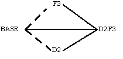
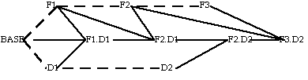

Automated Merging of Software Modifications
Abstract: Parallel modification of software modules by different programming teams is an inherent problem of large scale system software efforts. In the Multics Project experiment and analysis have lead to the development of an interactive program, merge_ascii, which competently merges related texts. Because merge_ascii is insensitive to the syntax of the merged text, it is capable of merging documentation texts as well as PL/I or assembler source programs.
The user must interact with the merging operation only if overlapping modifications to the text are discovered or if an original version of the text is not available. If an original version of the related texts is available, the merge often proceeds without user intervention. Whenever human intervention is required, merge_ascii displays the regions of text in question upon the user's terminal and then invokes an editor. Minimization of output, keystroke efficiency, and merge oriented edit requests ensure ease of use even when intervention is required.
The development of the New Storage System for Multics Release 4.0 provided the impetus for creating sophisticated merging tools. The NSS development group independently modified about half of the supervisor's 600 modules. Using merge_ascii and its prototypes, it was possible for the NSS group to track and update from ongoing system installations at the rate of about 20 modules per week. This updating required about 2 hours of a lead programmer's time each week. Because the merging operation was easy, it was done often enough that no significant design divergences developed between NSS based Multics and the then current state of Multics software.
I. INTRODUCTION
The asynchronous modification of software modules and documentation by different programming teams is an inherent problem in system software development. Even with a relatively small staff, the fast pace of software development in the Multics Project makes it difficult to synchronize program modifications. Our reaction to such problems is to create software tools to assist software development. Experiment and analysis have led to the development of a Multics PL/I program, merge_ascii, that competently merges related texts.
Merge_ascii provides these benefits:
- Changed text is presented to the user in a readable format
- The user is free to concentrate on the correctness of the merge, rather than on complicated editing operations,
- The structuring of the merging operation reduces the chance for errors and omissions.
- Trivial operations do not consume the user's time.
- Attention is focused on difficult situations.
The output text produced by merge_ascii comes with the same guarantee as software produced by other means: none. It should be double checked, tested, or proven the same as other software. The typical system programmer performs the most automated merge possible. Following the merge, the Multics program compare_ascii (described below) is used to generate a list of all differences between the merged output and one or more of the input text. The listing of the differences and a listing of the merged source are usually queued for offline printing. At this point checking, testing, or work on other programs can proceed in any order. In any case, before the changed program can be installed in the Multics system, it must be independently audited by another programmer.
II.THE NEED FOR A MERGING TOOL
The need for a special merging tool arises whenever several programmers are concurrently modifying separate copies of a single software module. Merging is potentially necessary unless only one programmer at a time is allowed to work on each module (thereby creating a queuing problem). Merge_ascii allows the software development manager an extra degree of freedom in the scheduling of overlapping projects.
Bug fixes and enhancements to the primary operating system cannot be suspended during protracted development efforts. The conversion of Multics from the 645 processor to the 6180 processor and the implementation of the new Storage System for Multics Release 4.0 are examples of projects that proceeded in parallel with ordinary system development. In both cases development took over six months and involved changes to hundreds of programs that could not be made in an incremental fashion.
Projects of shorter duration are also subject to the problems arising from concurrent modifications. These include accidental de-installation of recent enhancements or bug fixes, and incorrect merging due to typographical errors or oversight. At the project level these problems cause schedule slippage and additional man-hours.
The more structured the merging process can be made, the fewer opportunities will exist for oversight. Insofar as the merging process can be automated, it will facilitate frequent merging as well as remove additional chances for programmer errors.
In short, we find that there are substantial savings to be gained from the use of merging tools. Probably such tools would have been available sooner except for the fact that the immediate benefits were outweighed by the implementation cost. During the development of the new Storage System it was clear that every hour spent on the development of merge_ascii was regained within a week. Using the information presented here, the implementation of merging tools on other systems should be relatively easy.
III.DESIGN PRIORITIES
Design decisions relating to merge_ascii were made according to the following ordered set of priorities:
- Generality
- Reliability
- Automation
- Ease of use
- Efficiency
Reliability is enhanced by automatic and semi-automatic merging operations that are less error-prone than traditional editing techniques. Great care has been taken to ensure that merge_ascii does not insert new bugs into the user's text, and in fact this has not happened in the last year.
Whenever possible, merge_ascii performs the merging operation automatically. Text that is the same in all relevant versions of the program is always used unchanged in the merged version. Because it is usually safe to pick up non-overlapping changes found in one or the other of the updated versions, this can also be done automatically. Users desiring greater control over the merge can disable this feature.
Keystroke efficiency, minimization of output, simple mnemonics, and unambiguity are other features contributing to ease of use. In addition, merge_ascii conforms to the standards established for all Multics commands.
Although machine efficiency was routinely sacrificed to meet the objective of reliability, merge_ascii uses resources commensurate with other standard editing tools. The efficiency of merge_ascii is largely due to the fact that the Multics PL/I compiler generates code for character manipulation operations that takes full advantage of the EIS (Extended Instruction Set) capability of Level 68 hardware.
IV. ASSUMPTIONS
Fundamental assumptions must be made in order to justify the actual implementation of merge_ascii. Some assumptions are stated explicitly here.
It is assumed that texts consist of ordered sequences of lines. In another environment it might be desirable to use some other character sequence besides <newline> to delimit units of text. In the Multics environment, <newline> serves adequately as a delimiter.
Let [a], [b], [c], etc. stand for mutually distinct blocks of text. It is assumed that given the texts:
original text: [a][b][c][d][e][f]
modified text: [a][x][b][d][z][f]
it is reasonable to decompose the modification into the steps:
insert [x] before [b]delete [c] before [d]
change [e] to [z]
A program that has existed on Multics for many years, compare_ascii, automates this function. Given an original version and a modified version of a text, compare_ascii prints both original and modified versions wherever discrepancies are found and passes over identical blocks of text without comment.
Merge_ascii proceeds linearly through the text detecting changes, insertions, and deletions. Merge_ascii, like compare_ascii, does not recognize text moves explicitly. When presented with:
original text: [a][b][c][d]
modified text: [a][c][b][d]
merge_ascii deduces that:
[b] deleted before [c]
[b] inserted before [d]
rather than the more perceptive deduction:
[b] moved from before [c] to before [d]
It is assumed that the inability to detect moves causes no malfunction of other algorithms. After all, the logical components of moves are detected. At worst, the user is made to feel superior to the computer. The identification of moves could lead to increased automation and ease of use, but might also decrease reliability. To detect and handle text moves correctly at least doubles the complexity of the merging problem, while adding little to the value of its solution.
V. GETTING BACK IN SYNC
Merge_ascii determines the location and extent of differences between texts in the same manner as compare_ascii. This algorithm will be explained in terms of two texts: an original named A and a modified version named B. The extension to more than two texts is straightforward.
Finding the locations of differences is relatively easy. The program has two states: "in sync" and "out of sync". Initially, merge_ascii is in sync at the beginning of each text. Merge_ascii proceeds through A and B, skipping over matching lines. As soon as non-matching lines are found, the program enters the "out of sync" state.
When "out of sync", merge_ascii attempts to regain synchronization at some point further down in the texts. When that is accomplished, the blocks of text between the points where the texts fell out of sync and the points where sync was regained constitute the extent of the local difference between the texts.
Given the line-oriented nature of merge_ascii, clearly it cannot regain sync until it has found at least one line which exists further down in all input texts. Because is is important to get in sync at the proper point, stronger conditions are established. In order to reduce the probability of overlapping changes, it is desirable to regain sync at the nearest point possible. In order to avoid synchronization at the wrong instance of a block of text which occurs repeatedly, it is required that the block following the-synchronization point occur only once in each input text. It is also required that the block of text be non-trivial. The user can specify the minimum number of lines and characters which must match at a synchronization point.
For concreteness, let us treat the remaining text in A (from the beginning of the difference) as a separate text named RA (i.e. rest of A), and the remainder of B as a separate text named RB. Let us also invent the notation RA(i,j) to refer to lines through j inclusive of text RA. Let RA_lines be the number of lines in RA and RB_lines be the number of lines in RB. Thus RA(1,1) is the first line of RA, and RB(RB_lines,RB_lines) is the last line of RB. Assuming for the moment that the minimum number of lines required to be in sync is two, that no minimum number of characters is required, and that the requirement of uniqueness is suspended, the heart of the synchronization algorithm is:
do i = 1 by 1;
if i+2 > RA_lines
then if i+2 > RB_lines
then go to found end_of_texts;
if i+2 <= RA_lines
then if RA(i,i+2) exists_in RB(1,i+2)
then go to found_A_in_B;
if i+2 <= RB_lines
then if RB(i,i+2) exists_in RA(1,i+2)
then go to found_B_in_A;
end;
VI. ACTION TABLES
It is now possible to specify what the action of merge_ascii should be, given various local relationships between divergent texts. The easiest case to consider is the merge of two modified versions, named B and C, when the original, named A, is not available.
In the following table, actions and interpretations are given as a function of the text found between points where discrepancies began and the points where the texts were found to be in synch again. In the following table, [ ] represents the case where no text intervened, [b] a non-null block of lines in text B, and [c] a non-null block (distinct from [b]) in text C. If the result column specifies a block of text such as [b], then that block is added to the output text. If the result is EDIT, the user is allowed to choose lines from any of the texts, input new text, or perform a combination of such operations.
MERGE ACTION TABLE - NO ORIGINAL
| TEXT B | TEXT C | RESULT | INTERPRETATIONS |
|---|---|---|---|
| [b] | [b] | [b] | NO CHANGE |
| [b] | [c] | EDIT | CHANGE BY B? CHANGE BY C? CHANGE BY BOTH? |
| [b] | [ ] | EDIT | INSERT BY B? DELETE BY C? |
| [ ] | [c] | EDIT | DELETE BY B? INSERT BY C? |
Merging two texts with merge_ascii is more reliable than performing the equivalent compare_ascii and standard text editing operations because the merge is more structured. The user must make an explicit decision about each difference between the two versions.
The opportunity for user error is greatly reduced if merge_ascii is allowed to make direct use of the original upon which the two texts were based. The preservation of the original is not a luxury. It is logically required to distinguish between insertions by the author of text B and deletions by the author of text C. The genealogy of texts B and C must be known in order to determine which other version is the proper original to use. The proper original to merge texts B and C is their most recent common ancestor.
The following table specifies the actions of merge_ascii when provided with an original and when operated in its most automatic mode. If the user wishes, automatic uses of text in one or both updated versions are replaced with calls to the editor.
MERGE ACTION TABLE - WITH ORIGINAL
| TEXT A (original) | TEXT B | TEXT C | ACTION | INTERPRETATION |
|---|---|---|---|---|
| [a] | [a] | [a] | [a] | NO CHANGE |
| [ ] | [b] | [ ] | [b] | INSERT BY B |
| [ ] | [ ] | [c] | [c] | INSERT BY C |
| [a] | [b] | [a] | [b] | CHANGE BY B |
| [a] | [a] | [c] | [c] | CHANGE BY C |
| [a] | [ ] | [a] | [ ] | DELETE BY B |
| [a] | [a] | [ ] | [ ] | DELETE BY C |
| [ ] | [b] | [c] | EDIT | BOTH INSERTED |
| [a] | [b] | [c] | EDIT | BOTH CHANGED |
| [a] | [b] | [ ] | EDIT | CHANGE & DELETE |
| [a] | [ ] | [c] | EDIT | DELETE & CHANGE |
| [ ] | [b] | [b] | EDIT | SAME INSERTION |
| [a] | [b] | [b] | EDIT | SAME CHANGE |
| [a] | [ ] | [ ] | EDIT | SAME DELETION |
The fourteen textual situations given in the above table can be mapped into four categories. The first category, picking up unchanged text, is nearly foolproof. It is the only sensible choice for a merging program. If some change is required to unchanged text, it must be detected by the user, and done with an ordinary text editor.
The second category, picking up non-overlapping differences, is in practice reasonably safe. The user should later examine such instances, but this examination is generally done anyway by all but the most gullible users. Even "egoless programmers" are very curious about what someone else does to "their" programs.
The third category consists of overlapping (but distinct) modifications. These can only be merged by the user.
Merge_ascii is quite good at detecting overlapping changes and, of course, the ultimate result depends on the user.
The fourth category, identical modifications, includes apparent convergence of the modified versions. There are three ways this can come about. The safest default action is to invoke the editor and let the user decide what to do.
Convergence can happen if the lines in question have been inserted wholly independently by different persons. This case is quite rare, therefore it does not bother the user if merge_ascii occasionally requires the making of a trivial editing decision.
Another way in which apparent convergence can happen is if the purported original is not a proper original, but rather a very early version, a version containing yet a third set of changes, or a wholly different text. In all of these cases, the unexpectedly frequent occurrence of convergence will serve to alert the user that something is wrong.
Finally, there are times when a proper original is not available and the user is forced to use a version which is older than the base from which the other versions evolved. Any differences between the purported original and the actual base appear to have been made to both new versions. If the user knows that an improperly old "original" is being used, merge_ascii can be forced to automatically use convergent text. This optional feature is provided to meet popular demand. Routine use of merge_ascii in this mode is discouraged, since most justifications for automatic merging are invalid without a proper original.
VII. STRATEGY OF MERGING
The following is an example of merging changes to the Multics dispatcher. The author modified the dispatcher to implement a deadline scheduling algorithm. At the same time, another programmer modified the dispatcher to support four-megaword system controllers. The independent changes required a merge of our final versions (D2 and F3).
In the following diagrams, dotted lines running from left to right represent the updating of a text through editing. A merge is represented by the conjunction of three solid lines, of which the outer two come from the texts being merged, and the inner one comes from the original used for the merge.

There were delays before the final version of either dispatcher was ready for installation in the exposure system at MIT. In order to satisfy himself that no significant incompatibilities existed between the two versions, the author merged two early versions (referred to-as D1 and F1) before either was fully debugged. Each time the four-megaword version or the deadline version were upgraded (F2, D2, F3), the upgrades were merged into the previously merged version The "original" used for each incremental merge was always the most recent common ancestor of the two versions being merged.

Note that F3.D2, the final result of the incremental merges, should have been identical to the D2.F3 generated from a direct merge of F3 and D2 using the BASE version as the original. The fact that they were identical provided a check on the whole operation.
VIII. EDIT REQUESTS
Merge_ascii displays differing blocks of text and enters its editor whenever the relevant action table specifies EDIT. Each line of each variation is displayed with its text identifier and its relative line number in its text. The text identifier is A for the original text, Z for the output text, and B or C for the texts being merged.
The following editing requests are available. Lines from texts A, B, C, and Z may be selected by the print and insert requests.
go return from editor to comparison loop.
i read and insert terminal input until a line
containing only "." is typed.
B insert previously printed block from text B.
Bx insert the line numbered x from text B.
Bx,y insert lines x to y inclusive from text B.
pBx print the line numbered x from text B.
pBx,y print lines x to y inclusive from text B.
oops or o undo all insertions and input requested since blocks of
differing-lines were last printed.
e or E issue rest of line as Multics command.
quit exit merge_ascii, aborting the entire merge.
The above requests are highly oriented toward merging operations. Although uses for more general editing operations can be imagined, in practice the need for general editing rarely arises.
IX. TYPICAL TERMINAL SCRIPT
The following is an example of updating the New Storage System header file to reflect the changes made in the standard header file between systems 27.0 and 27.1. The header file contains information needed to generate Multics system tapes. In the sample script, lines typed by the user are prefixed by exclamation points.
!merge_ascii 27.1.he nss.he -old 27.0.he -output new.he
A1039 sum,
A1040 updateb,
Changed to:
B1040 sum,
B1041 update_kste_access,
B1042 updateb,
But also changed to:
C1065 vtoc_attributes,
C1066 sum,
EDIT
!c
!b1O41
!go
Merge finished
In the above example, the files being merged were each over 1500 lines long and differed at over 30 points. The total number of differing lines exceeded 300. Merge_ascii required user intervention only once, where overlapping changes were detected.
Honeywell Software Productivity Symposium, Minneapolis MN, April 1977.